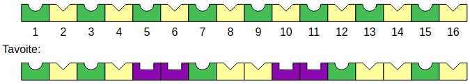

Voimme huomata, että tavoitteen alussa ja lopussa on vuorotellen pyöreä (vihreä) ja kolmio (keltainen) leima.

Muokataan rullan 1 asetukset sellaisiksi, että se tuottaa vuorotellen pyöreän leiman ja kolmioleiman:
Alla on rullan 1 nyt tuottama tulos. Se poikkeaa tavoitteista kohdissa 5-13:

Korjataan seuraavaksi rullalla 2 kohtien 5-13 välinen osa oikeaksi. On helppo havaita, että siinä toistuu (lopussa osittain katketen) alla määritetty 5 leiman jakso:
Rulla 2 asettaa nyt kohtien 5-13 väliseen osuuteen seuraavat leimat, ja lopputuloksena koko tavoite on valmis.
Voimme aluksi pistää merkille, että kolme rullaa voivat liikkua keskenään päällekkäin esimerkiksi seuraavilla tavoilla:

Kokeillaan löytää jokin sellainen ratkaisu, missä rulla 1 liikkuu alusta loppuun vastaten sekä ensimmäisten että viimeisten kohtien lopullisista leimoista, ja rullat 2 ja 3 korjaavat keskiosien leimoja oikeiksi.
Yksinkertainen valinta rullaksi 1 koostuisi 2 leimasta, jotka asettavat vuorotellen kolmioleimoja (keltainen) ja pyöreitä leimoja (vihreä). Se asettaa alun kohdat 1-3 ja lopun kohdan 20 oikein:

Kun tarkastellaan yhä virheellistä kohdista 4-19 koostuvaa osaa, voimme löytää siitä alla havainnollistetun 4 leimasta koostuvan jakson, joka asettaa kohdat 4-9 ja 14-19 oikeaksi:

Edellä kuvatun 4 leiman jakson voisi löytää myös etsimällä tavoitteesta systemaattisesti keskenään samanlaisia jaksoja. Esimerkiksi alla on kuvattu, kuinka voisimme ensiksi havaita kahdesta peräkkäisestä suorakulmioleimasta (violetista) koostuvat kohdissa 7-8 ja 15-16 olevat jaksot. Sen jälkeen voimme laajentaa jaksoja yhden ruudun kumpaankin suuntaan niin, että jaksot ovat yhä keskenään samanlaisia. Lopuksi voimme havaita, että ensimmäistä jaksoa edeltää jakson kahden viimeisen kohdan kanssa täsmäävä osa, ja jälkimmäisen jakson perässä on jakson kahden ensimmäisen kohdan kanssa täsmäävä osa. Tästä päädytään loppujen lopuksi löytämään edellä kuvattu aiempi 4 leiman jakso.

Enää pitää korjata kohdat 10-13, joka onnistuu helposti rullalla 3.
Käydään nyt vielä läpi koko ratkaisu. Ensin rulla 1 asettaa vuorotellen kolmioleimoja ja pyöreitä leimoja kohtiin 1-20:
Tämän jälkeen rullaan 2 asetetaan ylempänä löytämämme 4 leiman jakso, ja rullaa 2 sovelletaan kohtiin 4-19:

Tämän jälkeen rulla 3 asetetaan korjaamaan kohdat 10-13. Tämä onnistuu suoraviivaisesti esim. asettamalla rullaan 3 kohtia 10-13 vastaavat 4 leimaa ja soveltamalla sitä kohtiin 10-13:
Kokonaisuus näyttää nyt seuraavalta:
Tehtävän asetelma muistuttaa tietojenkäsittelytieteen ongelmaa, jossa on tavoitteena paloitella annettu merkkijono (tässä leimajono) samanlaisena toistuviin osiin (tässä samalla leimarullalla leimattaviin osiin). Tällaisen toistuvan osan ("jakson") määrittäminen antaa tietoa merkkijonon (joka voisi kuvata esimerkiksi DNA-sekvenssiä) rakenteellisista toistuvuudesta. Tietojenkäsittelytieteen tutkijat ovat onnistuneet kehittämään ongelmaan tehokkaita ratkaisualgoritmeja.